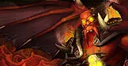

At the heart of Quel'Thalas, Kil'jaeden reaches through the Sunwell. M'uru, Kalecgos, and the Felstorm stand between your raid and the Deceiver's final Burning Crusade confrontation.
Brutallus and Felmyst teach positioning early. The Eredar Twins and M'uru push healers to their limits. Kil'jaeden's multi-phase finale is a fitting capstone to Outland — arcane bombs, dragon breaths, and a realm-wide race against annihilation.

The Sunwell's light must not fall. Stand together.